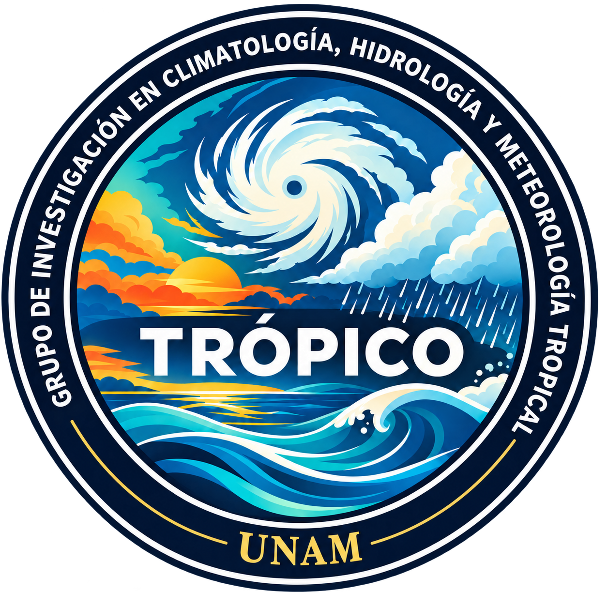

Dinámica atmosférica tropical
Circulación atmosférica, convección organizada y ondas tropicales.

TRÓPICOCIENCIAS ATMOSFÉRICAS TROPICALES
Grupo de Investigación en Climatología, Hidrología y Meteorología Tropical
Conoce nuestra investigaciónQUIÉNES SOMOS
Comprendemos los procesos físicos que determinan el tiempo meteorológico, el clima y la hidrología de los trópicos.
TRÓPICO es un grupo de investigación dedicado a ampliar el conocimiento sobre los procesos atmosféricos, climáticos e hidrológicos de los trópicos.
Nuestra investigación estudia los mecanismos físicos que gobiernan el tiempo meteorológico y el clima tropical, su variabilidad en distintas escalas espaciales y temporales, y sus implicaciones para los fenómenos extremos y las amenazas hidrometeorológicas.
Promovemos la investigación científica, la colaboración académica, la formación y la divulgación de las ciencias atmosféricas y del clima tropical.
QUÉ ESTUDIAMOS
Nuestra investigación integra la dinámica atmosférica, la variabilidad climática, la hidrología y los procesos meteorológicos tropicales.
Circulación atmosférica, convección organizada y ondas tropicales.
Variabilidad climática, cambio climático y dinámica del clima tropical.
Precipitación, transporte atmosférico de humedad y variabilidad hidrológica.
Ciclones tropicales, sistemas convectivos de mesoescala y fenómenos meteorológicos extremos.
Precipitación extrema, sequías, olas de calor, rayos y riesgos asociados al tiempo meteorológico.
NUESTRA COMUNIDAD
Conoce a los investigadores, estudiantes y colaboradores que integran TRÓPICO.

Coordinadora del grupo
Instituto de Ciencias de la Atmósfera y Cambio Climático, Universidad Nacional Autónoma de México
Correo
Coordinador del grupo
Instituto de Ciencias de la Atmósfera y Cambio Climático, Universidad Nacional Autónoma de México
Correo
Estudiante de doctorado
Posgrado en Ciencias de la Tierra, Universidad Nacional Autónoma de México
Correo
Estudiante de doctorado
Posgrado en Ciencias de la Tierra, Universidad Nacional Autónoma de México

Estudiante de maestría
Posgrado en Ciencias de la Tierra, Universidad Nacional Autónoma de México

Colaborador de investigación
Maestría en Ingeniería (Recursos Hidráulicos)
Escuela de Geociencias,
Facultad de Minas,
Universidad Nacional de Colombia,
Sede Medellín
PRODUCCIÓN CIENTÍFICA
Aquí presentaremos las publicaciones científicas y las contribuciones de investigación de quienes integran TRÓPICO.
ACTIVIDADES RECIENTES
Conoce nuestras novedades de investigación, actividades académicas e iniciativas de divulgación científica.
CONTACTA CON NOSOTROS
Ciudad de México, México